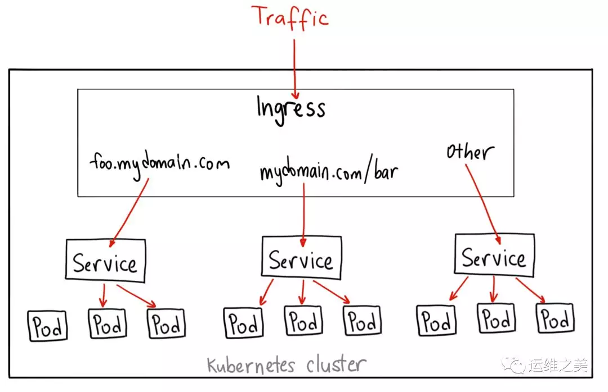
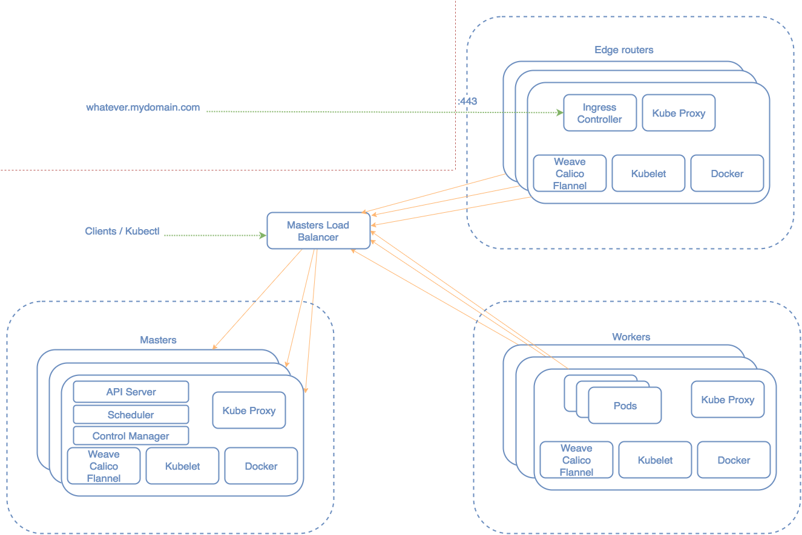

Kubernetes Ingress and Traefik
Why
Kubernetes 为每个 Pod 分配了唯一的 IP（即：Pod IP），Pod 里的多个容器共享这个 IP。Pod 内的容器除了 IP，还共享相同的网络命名空间、端口、存储卷等，也就是说这些容器之间能通过 Localhost 来通信。Pod 包含的容器都会运行在同一个节点上，也可以同时启动多个相同的 Pod 用于 Failover 或者 Load balance。
Pod 的生命周期是短暂的，Kubernetes 会根据应用的配置对 Pod 进行创建、销毁并根据监控指标进行伸缩扩容。Kubernetes 在创建 Pod 时可以选择集群中的任何一台空闲的节点上进行，因此其网络地址是不固定的。由于 Pod 的这一特点，一般不建议直接通过 Pod 的地址去访问应用。
为了解决访问 Pod 不方便直接访问的问题，Kubernetes 采用了 Service 对 Pod 进行封装。Service 是对后端提供服务的一组 Pod 的抽象，Service 会绑定到一个固定的虚拟 IP上。该虚拟 IP 只在 Kubernetes Cluster 中可见，但其实该虚拟 IP 并不对应一个虚拟或者物理设备，而只是 IPtables 中的规则，然后再通过 IPtables 将服务请求路由到后端的 Pod 中。通过这种方式，可以确保服务消费者可以稳定地访问 Pod 提供的服务，而不用关心 Pod 的创建、删除、迁移等变化以及如何用一组 Pod 来进行负载均衡。
实现 Service 这一功能的关键是由 Kubernetes 中的 Kube-Proxy 来完成的。Kube-Proxy 运行在每个节点上，监听 API Server 中服务对象的变化，再通过管理 IPtables 来实现网络的转发。
Traditional ways of exposing a service to the external world
ClusterIP
This is the default. Choosing this value means that you want this service to be reachable only from inside of the cluster.
1 | apiVersion: v1 |
Use Kubernetes Proxy to access cluster internal:kubectl proxy --port=8080
Then visit http://localhost:8080/api/v1/proxy/namespaces/<NAMESPACE>/services/<SERVICE-NAME>:<PORT-NAME>/
NodePort
A NodePort service is the most primitive way to get external traffic directly to your service. NodePort, as the name implies, opens a specific port on all the Nodes (the VMs), and any traffic that is sent to this port is forwarded to the service.
1 | apiVersion: v1 |
LoadBalancer
On top of having a cluster-internal IP and exposing service on a NodePort, also ask the cloud provider for a load balancer which forwards requests to the Service exposed as a :NodePort for each Node. If the cloud provider does not support the feature, the field will be ignored.
Ingress
Since Kubernetes v1.2.0 you can use Kubernetes ingress which includes support for TLS and L7 http-based traffic routing.
Ingress is actually NOT a type of service. Instead, it sits in front of multiple services and act as a “smart router” or entrypoint into your cluster.
An Ingress is a collection of rules that allow inbound connections to reach the cluster services. It can be configured to give services externally-reachable urls, load balance traffic, terminate SSL, offer name based virtual hosting etc.
In order for the Ingress resource to work, the cluster must have an Ingress controller running. The Ingress controller is responsible for fulfilling the Ingress dynamically by watching the ApiServer’s /ingresses endpoint.
Ingress 是自 Kubernetes 1.1 版本后引入的资源类型。Ingress 支持将 Service 暴露到 Kubernetes 集群外，同时可以自定义 Service 的访问策略。Ingress 能够把 Service 配置成外网能够访问的 URL，也支持提供按域名访问的虚拟主机功能。例如，通过负载均衡器实现不同的二级域名到不同 Service 的访问。
使用 Ingress 前必须要先部署 Ingress Controller，Ingress Controller 是以一种插件的形式提供。Ingress Controller 通常是部署在 Kubernetes 之上的 Docker 容器，Ingress Controller 的 Docker 镜像里包含一个像 Nginx 或 HAProxy 的负载均衡器和一个 Ingress Controller。Ingress Controller 会从 Kubernetes 接收所需的 Ingress 配置，然后动态生成一个 Nginx 或 HAProxy 配置文件，并重新启动负载均衡器进程以使更改生效。换句话说，Ingress Controller 是由 Kubernetes 管理的负载均衡器。
无论使用何种负载均衡软件（ 比如：Nginx、HAProxy、Traefik等）来实现 Ingress Controller，官方都将其统称为 Ingress Controller。
Kubernetes Ingress 提供了负载均衡器的典型特性：HTTP 路由、粘性会话、SSL 终止、SSL直通、TCP 和 UDP 负载平衡等。

1 | apiVersion: extensions/v1beta1 |
You could go even further, isolate at the infra level where your ingress controller runs and think of it as an “edge router” that enforces the firewall policy for your cluster. This is where Traefik comes to play.

Traefik
Traefik is a modern HTTP reverse proxy and load balancer made to deploy microservices with ease. It supports several backends among Mesos/Marathon and Kubernetes to manage its configuration automatically and dynamically.
We can deploy a Kubernetes cluster similar to the picture above and will run Traefik as DaemonSet.
1 | apiVersion: extensions/v1beta1 |
Our edge-router will be just another Kubernetes node with some restrictions.
We don’t want any other pod to be scheduled to this node so we set –register-schedulable=false when running the kubelet as well as giving it a convenient label: –node-labels=edge-router.
Kubernetes will run DaemonSets on every node of the cluster even if they are non-schedulable. We only want this DaemonSet to run on the edge-router node so we use “nodeSelector” to match the label we previously added.
1 | nodeSelector: |
configuration
All those rules can be set in .toml file. Rules can also be defined in labels on docker containers and Traefik will pick them up dynamically.
Traditional reverse-proxies require that you configure each route that will connect paths and subdomains to each microservice. In an environment where you add, remove, kill, upgrade, or scale your services many times a day, the task of keeping the routes up to date becomes tedious.
Træfik listens to your service registry/orchestrator API and instantly generates the routes so your microservices are connected to the outside world – without further intervention from your part.
Example of using Traefik as K8S ingress provider and take advantage of the Path-Based Routing:
1 | apiVersion: extensions/v1beta1 |
Reference
- Kubernetes NodePort vs LoadBalancer vs Ingress? When should I use what?
- 浅析从外部访问 Kubernetes 集群中应用的几种方式
- Understanding kubernetes networking: pods
- Understanding kubernetes networking: services
- [Understanding kubernetes networking: ingress] (https://medium.com/google-cloud/understanding-kubernetes-networking-ingress-1bc341c84078)